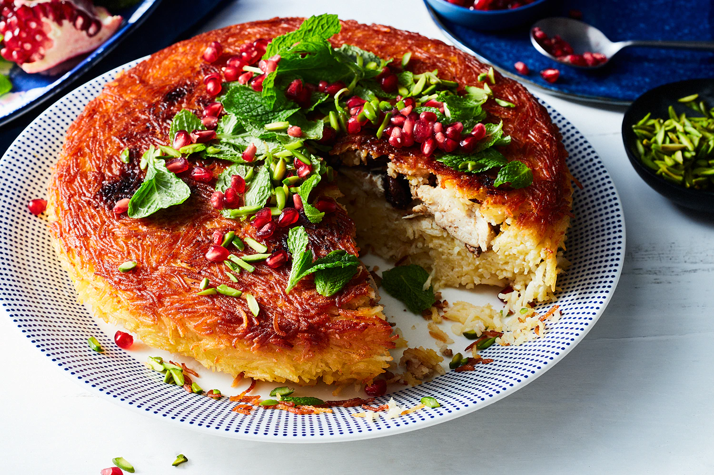

The famous Iranian tahchin is a savory rice delicacy resembling a cake or a casserole. The dish is made with precooked rice which is spiced with saffron, layered in a pan, then baked. After it has been baked, this rice casserole is turned upside down and cut into pieces. The dish is usually improved by the addition of meat or vegetables, which are layered between the rice. However, it can also be baked without any additional fillings. Numerous tahchin varieties can be found all over Iran in many traditional Iranian restaurants or at popular bazaars.
Meal prep time : 1 hour 35 minutes
Servings : 4